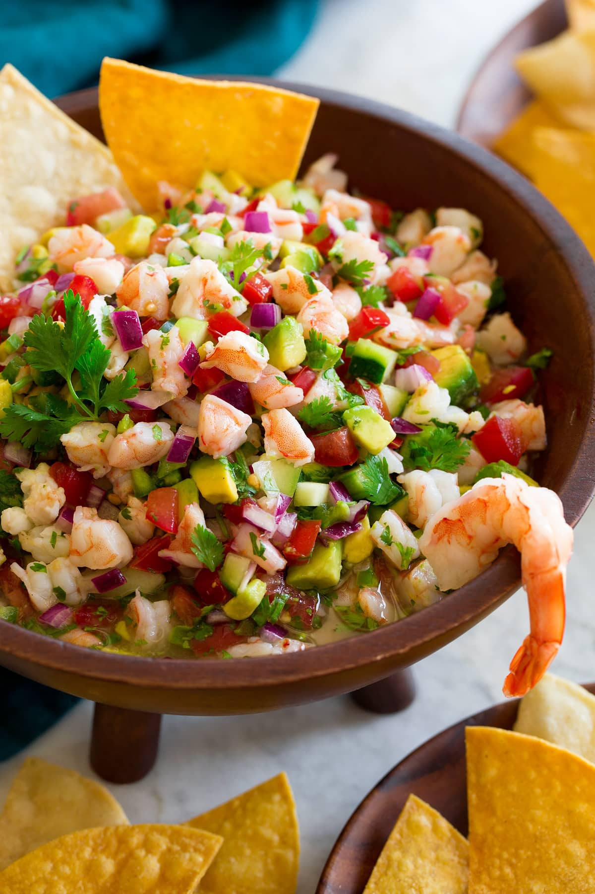

* Ceviche is a healthy dish that is usually served as an appetizer. Its generally made from raw fresh fish or shrimp, thats marinated in lemon and/or lime citrus juices. The acidity in the citrus cures the fish causing it to denature the proteins and become firm and opaque while absorbing flavor.
for this example we will use shrimp
Ingredients
- Shrimp
- About three limes
- About two lemons
- Roma Tomatoes
- Red Onions
- Cilantro
- Jalapenos
- Salt and Pepper
- Cucumber
- Avocado
- Bring a pot of water to a boil. Meanwhile, fill up a medium boel with ice water, set aside.
- Add shrimo to boiling water and let it cook just until pink and opaque, about 1 minute.
- Drain shrimp in a colander then transfer to ice water to cool for a few minutes. Drain well then chop shrimp into small pieces.
- In a medium bowl combine shrimo, lime juice, lemon juice, tomatoes, onion, cilantro, jalapeno peppers and season with salt and pepper to taste.
- Marinate then transfer to refrigerator and let rest one hour.
- Toss in cucumber and avacado and enjoy
Return to top